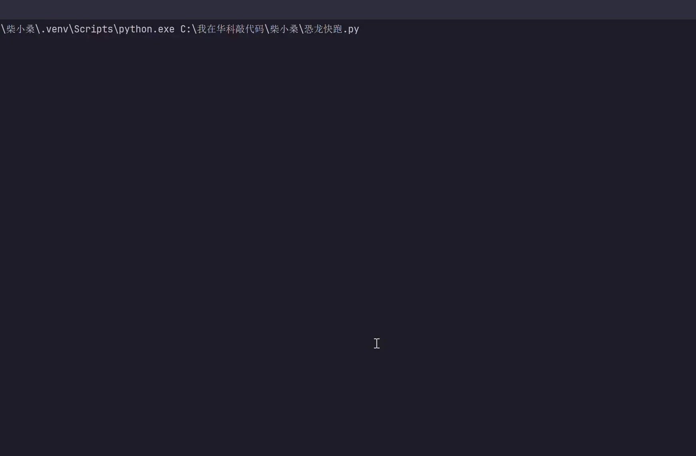
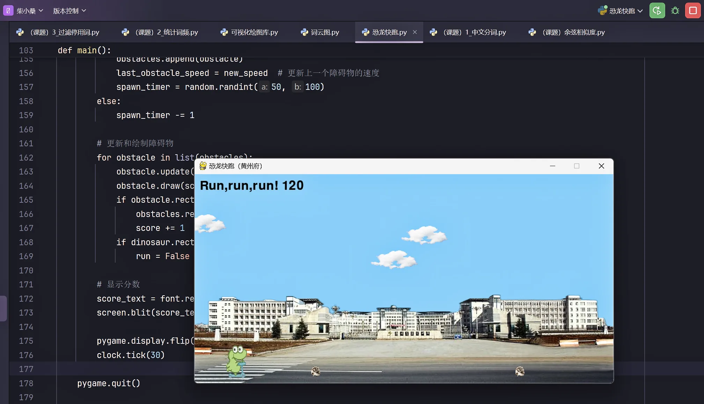
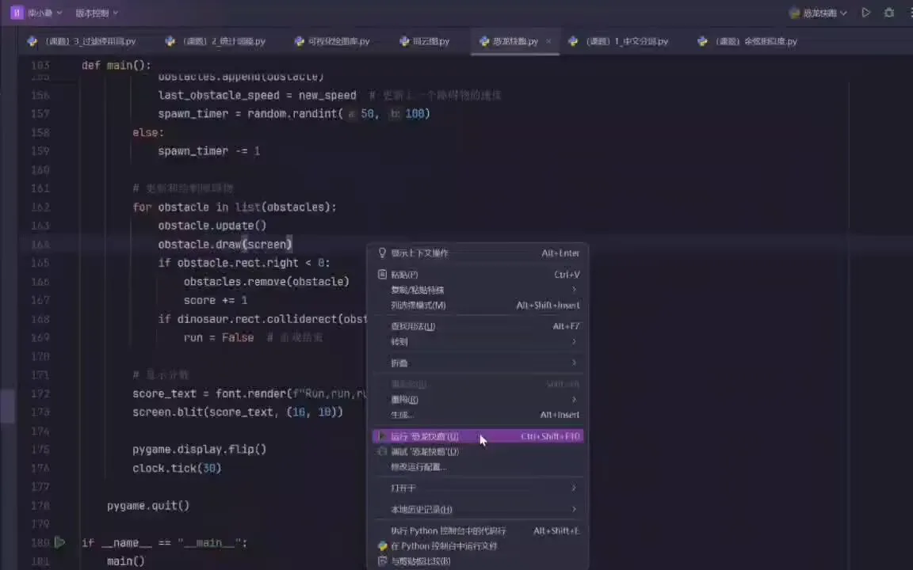

Journal · 2024-11-26
湖北省武汉市
2024年11月26日 02:27
以下代码文件，纪念母校的百廿诞辰！
校友们都捐了好多文献和资金，
而我只想给HG捐个小游戏。
南湖路一号，我想悄悄地告诉你：
“我爱你！真的，没骗你！”



程老师 : 我也想玩这个游戏
2024年11月26日 09:55
熊媛媛 : 我也想玩!
2024年11月26日 22:15
熊媛媛 : 为什么我学的Python天天就是搞模型算精确度（喜获0.5不如抛硬币），你学的Python可以做小游戏
2024年11月26日 22:16
柴江赣北 回复熊媛媛 : 恐龙快跑(黄州府)2.0版正在调试。增添“路灯”元素，“小恐龙”的敏捷度和流畅度显著提高！
2024年11月26日 23:01
熊媛媛 回复柴江赣北 : 做好请务必发出来让我康康
2024年11月26日 23:02
柴江赣北 回复熊媛媛 : 做好了！
2024年11月26日 23:05
2024年11月26日 23:04
恐龙快跑(黄州府)2.0版正在调试：
增添“路灯”元素，“小恐龙”的敏捷度和流畅度显著提高！！！
程老师 :
2024年11月26日 23:16
程老师 : 厉害啊，程序员大佬
2024年11月26日 23:16
黄炜 : nb啊
2024年11月27日 10:46
Nov 26, 2024 02:27
The code files below commemorate the 120th anniversary of my alma mater!
The alumni all donated lots of documents and funds,
but I just want to donate a little game to HG.
No. 1 Nanhu Road, I want to quietly tell you:
"I love you! Really, no lie!"
程老师 : I want to play this game too
Nov 26, 2024 09:55
熊媛媛 : I want to play too!
Nov 26, 2024 22:15
熊媛媛 : Why is the Python I learn just about building models and calculating accuracy every day (got a 0.5, worse than flipping a coin), while the Python you learn can make little games
Nov 26, 2024 22:16
柴江赣北 replied to 熊媛媛 : Dino Run (Huangzhou) version 2.0 is being debugged. We've added a "streetlamp" element, and the little dino's agility and smoothness have improved significantly!
Nov 26, 2024 23:01
熊媛媛 replied to 柴江赣北 : When it's done, be sure to send it over so I can take a look
Nov 26, 2024 23:02
柴江赣北 replied to 熊媛媛 : It's done!
Nov 26, 2024 23:05
Nov 26, 2024 23:04
Dino Run (Huangzhou) version 2.0 is being debugged:
We've added a "streetlamp" element; the little dino's agility and smoothness have improved significantly!!!
程老师 :
Nov 26, 2024 23:16
程老师 : Impressive, programmer boss
Nov 26, 2024 23:16
黄炜 : awesome
Nov 27, 2024 10:46
26 nov. 2024 02:27
Les fichiers de code ci-dessous célèbrent le 120e anniversaire de mon école !
Les anciens élèves ont tous donné beaucoup de documents et de fonds,
mais moi, je veux juste offrir un petit jeu à HG.
N° 1 de la route Nanhu, je veux te dire tout bas :
« Je t'aime ! Vraiment, je ne mens pas ! »
程老师 : Moi aussi je veux jouer à ce jeu
26 nov. 2024 09:55
熊媛媛 : Moi aussi je veux jouer !
26 nov. 2024 22:15
熊媛媛 : Pourquoi le Python que j'apprends ne sert qu'à faire des modèles et calculer la précision tous les jours (j'ai obtenu 0,5, pire qu'un pile ou face), alors que le Python que tu apprends peut créer des petits jeux
26 nov. 2024 22:16
柴江赣北 a répondu à 熊媛媛 : La version 2.0 de Dino Run (Huangzhou) est en cours de débogage. Nous avons ajouté un élément « lampadaire », et l'agilité et la fluidité du petit dinosaure se sont nettement améliorées !
26 nov. 2024 23:01
熊媛媛 a répondu à 柴江赣北 : Quand ce sera fini, envoie-le-moi absolument pour que j'y jette un œil
26 nov. 2024 23:02
柴江赣北 a répondu à 熊媛媛 : C'est fait !
26 nov. 2024 23:05
26 nov. 2024 23:04
La version 2.0 de Dino Run (Huangzhou) est en cours de débogage :
Ajout d'un élément « lampadaire » ; l'agilité et la fluidité du petit dinosaure se sont nettement améliorées !!!
程老师 :
26 nov. 2024 23:16
程老师 : Impressionnant, grand programmeur
26 nov. 2024 23:16
黄炜 : génial
27 nov. 2024 10:46
26.11.2024 02:27
Die folgenden Codedateien gedenken des 120. Geburtstags meiner Alma Mater!
Die Alumni haben alle viele Dokumente und Gelder gespendet,
aber ich möchte HG nur ein kleines Spiel spenden.
Nanhu-Road Nr. 1, ich möchte dir leise sagen:
„Ich liebe dich! Wirklich, kein Scherz!“
程老师 : Ich möchte dieses Spiel auch spielen
26.11.2024 09:55
熊媛媛 : Ich will auch spielen!
26.11.2024 22:15
熊媛媛 : Warum geht es beim Python, das ich lerne, jeden Tag nur darum, Modelle zu bauen und Genauigkeit zu berechnen (0,5 erzielt, schlechter als eine Münze zu werfen), während du mit deinem Python kleine Spiele machen kannst
26.11.2024 22:16
柴江赣北 antwortete 熊媛媛 : Dino Run (Huangzhou) Version 2.0 wird gerade debuggt. Wir haben ein „Straßenlaterne“-Element hinzugefügt, und die Agilität und Flüssigkeit des kleinen Dinos haben sich deutlich verbessert!
26.11.2024 23:01
熊媛媛 antwortete 柴江赣北 : Wenn es fertig ist, schick es mir unbedingt, damit ich es mir ansehen kann
26.11.2024 23:02
柴江赣北 antwortete 熊媛媛 : Fertig!
26.11.2024 23:05
26.11.2024 23:04
Dino Run (Huangzhou) Version 2.0 wird gerade debuggt:
Ein „Straßenlaterne“-Element wurde hinzugefügt; die Agilität und Flüssigkeit des kleinen Dinos haben sich deutlich verbessert!!!
程老师 :
26.11.2024 23:16
程老师 : Stark, Programmierer-Boss
26.11.2024 23:16
黄炜 : krass
27.11.2024 10:46